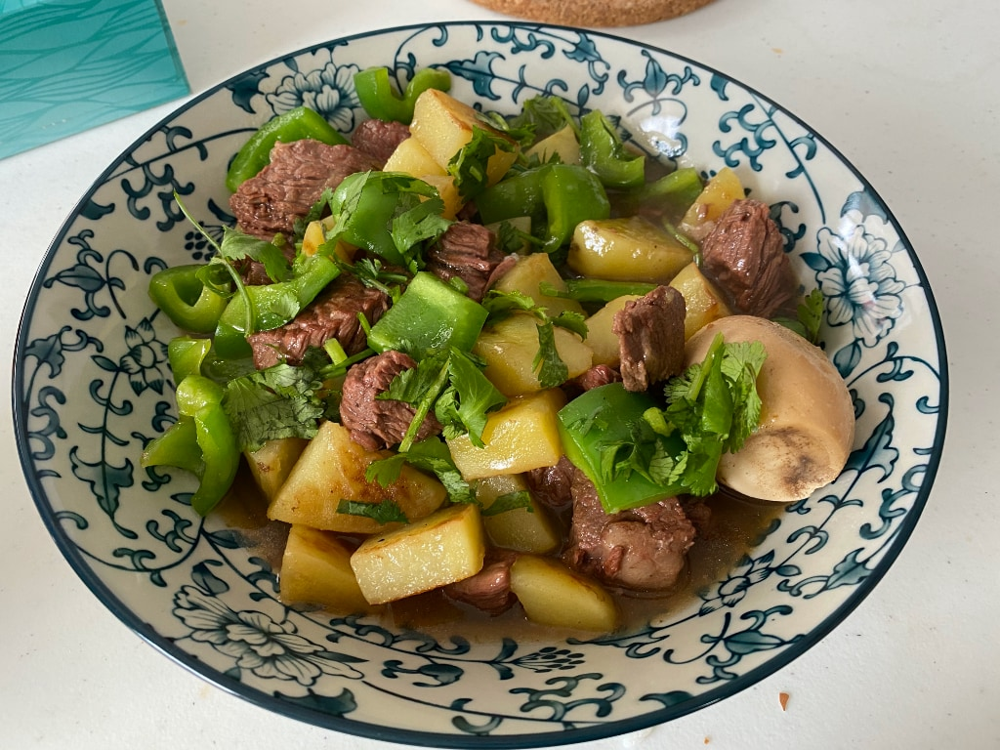
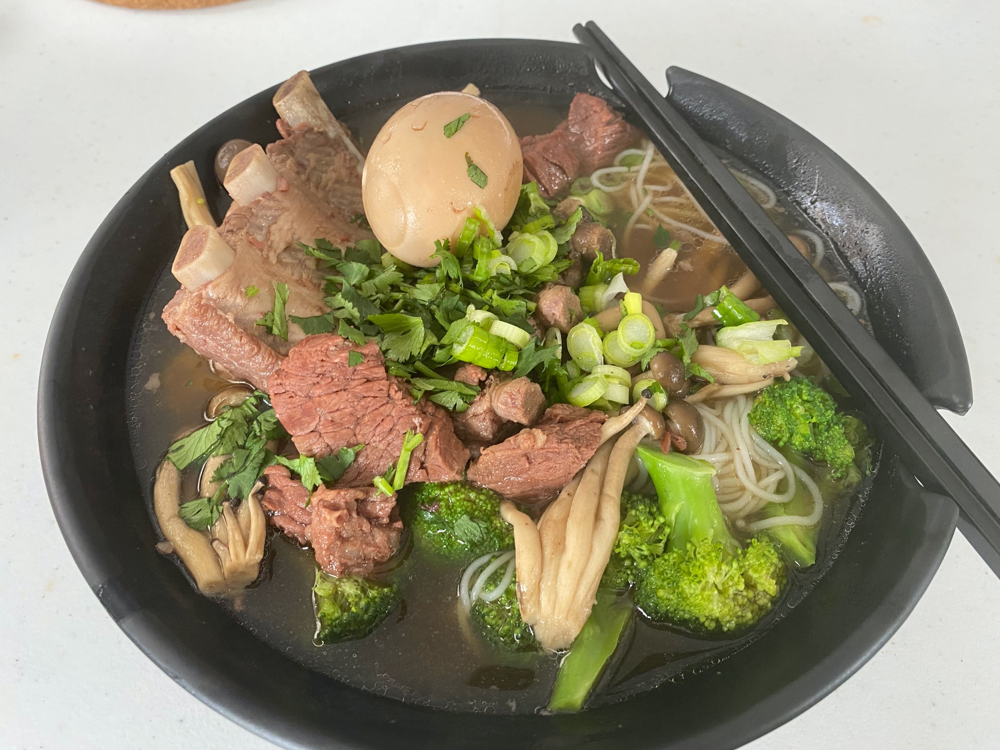
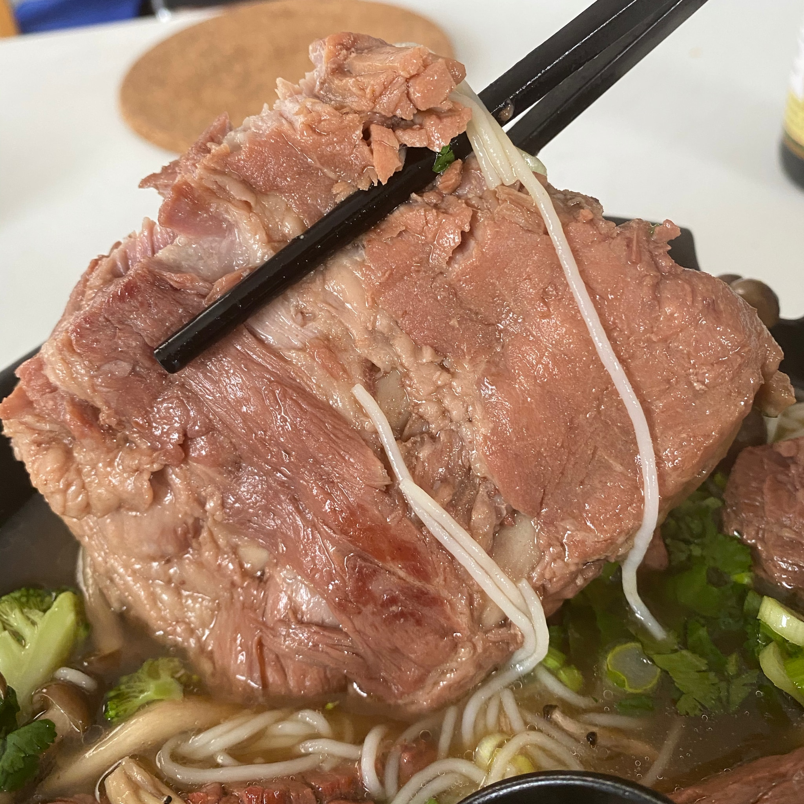

Introduction
This recipe is a simple but delicious Chinese style stewed beef (not spicy). By saying simple, I mean literally simple, and you can make a big bowl of this dish, put in refrigerator and serve multiple times for your next week. If you are a college student, this would be your ideal dish.
Ingredients
- 2 box (regular size) Grill beaf, or rib beef steak. Don't use pre-cut lean beaf cubes, unless you like their dry beef taste.
- 200ml soy sauce
- 1 bag of beef stew spice pouch (You can get this things in asian grocery stores, recommend not omit.)
- 5 thin slices of ginger
- 1 table spoon of sugar
- 1 bulb of garlic (don't peel)
- (Optional) Some boiled eggs, or other meat you like.
Directions
Step 1
Remove moistures on your beef with kitchen paper towels, and cut into cubes. I would recommend not cut into too small sizes, because beef shrinks a lot during cooking.
Step 2
In Chinese style beef stewing, there is an important pre-process technique to remove stink tastes from meat. And here are two common methods:
First method, take a stew pot, pot some olive oil, and heat pot to very hot. Fry the beef cubes and gingers until you see some caramelized color on it.
Second method, use one more stew pot, boil some water (should be 1 time more volume than your beef). After the water boiled, put beef in. Wait to see second boil, take beef out, and wash the beef cubes to remove the flocculent blood condensations.
If you are using very fresh beef, I would recommend you choose the first method, because will minimize the beef taste lost.
Step 3
Put beef in the stewing pot (if you are using the first method in previous step, keep using the same pot), add surger, pour boiling water (very important, must be boiling water). Then, turn heater to maximum to get things boil. Then, you will still see some flocculent blood condensations, remove them with a teaspoon. Make sure you clean most of the condensations in this step.
Step 4
Add 200ml soy sauce. Soy sauce taste differently among different brands, and most importantly, they are in different salt level. You may adjust the usage in this step. Add a small portion at first, taste, and decide if you need more. In this step, you want the soup be a little bit salty, which is very important, because beef is always be little bit less salty than the soup.
Also add a bulb of garlic, don't peel because otherwise the garlic will be melted into soup at last. Add the beef stew spice pouch. Add optional materials, like boiled eggs, if you want.
Step 5
Stew for 1.5 hours with the smallest heating level. Make sure your pot be boiling for the whole time, but in a very light way.
Step 6
Finished, put in refrigerator when the soup goes cold.
Serving Ideas
Serving Directly
When serving, you can serve this dish in many ways. The simplest one, take out some beef and soup, add some water (because the soup should be a little bit too salty) or unsalted beef broth (which you can buy in most grocery stores).
While, you can also do other tricks. Like the following:
Serving with Vegetables

This one is very simple: first, slow fry some potato cubes. Second, add refrigerated stew beef with original soup and some water. Third, wait to boil and add some peppers and boil for 5 minutes. Then, give some corn starch mixed with water to thicken the soup and concentrate all flavors. Finally, add some finely chopped cilantros and serve!
Serving with Rice Noodles

You can use similar idea in previous recipe and add different vegetables to serve multiple purpose, like serving with brocoli, mushroom and rice noodles. In this time, you don't need to add corn starch to thicken the soup.
Stewing Other Meat is Good as Well

Stew beef with pork ribs is also very good, but here are some thing to know:
- Porks are more easily to salt than beef
- Porks and beef have differently flavor, make sure the the main flavor is dominated by either pork or beef.